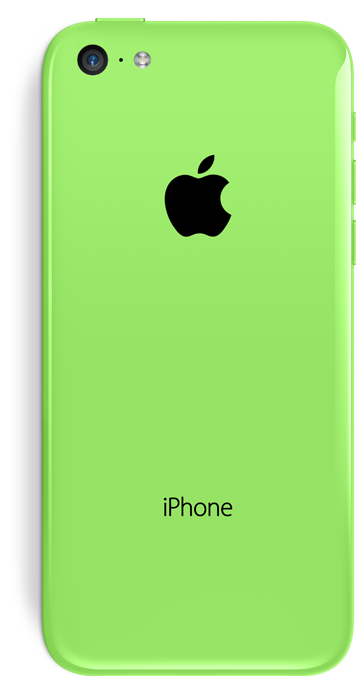
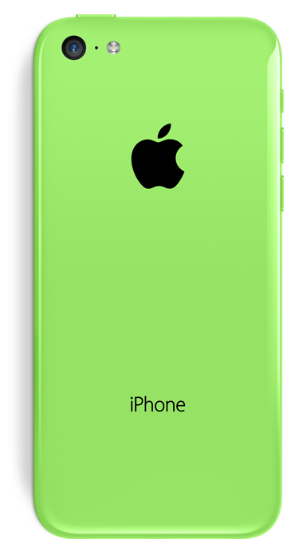

fullPage.js
Javascript only version
使用 渐变背景色
不要用纯白，要有色彩，才能让人记住啦。对于不支持的浏览器，弹出换浏览器的信息
使用竖直的文字加逼格，然后各类设计的图标
加入动画，使用提供的callback，参考apple的页面
提供中英文，两个界面，一切只为逼格
Javascript only version
使用 渐变背景色
不要用纯白，要有色彩，才能让人记住啦。对于不支持的浏览器，弹出换浏览器的信息
使用竖直的文字加逼格，然后各类设计的图标
加入动画，使用提供的callback，参考apple的页面
提供中英文，两个界面，一切只为逼格
5 Kb gzipped!!
Improve the loading time of your site!

IE 8+ support.
 

加入邮箱的链接 或者 点击复制功能
微信放入二维码